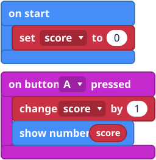
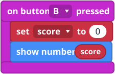
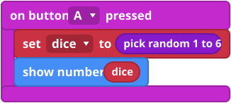

What it is
A variable is a labelled box that holds one thing, like a number. You give the box a name, such as score, and put a value in it. Later you can look in the box, or put in a new value.
This is how your micro:bit remembers things while the program runs.
The blocks
Click Variables, then Make a Variable..., type a name and click OK. Your blocks appear below it.


Mini examples



Try this
- Make the counter above and press A ten times.
- Add B to reset the score.
- Make a dice that shows a number from 1 to 6.
- Harder: show a heart when the score reaches 10 (see If and else).
Common mistakes
- It shows the word "score". You used show string with the word typed in. Drag the score block into show number instead.
- The score jumps to the wrong number. You used set where you wanted change.
- Two boxes with almost the same name. "score" and "Score" are different variables.
The code in words
JavaScript: let score = 0
score += 1
basic.showNumber(score)
Python: score = 0
score += 1
basic.show_number(score)
V1 and V2
The same on both.
Teacher notes
- Time: 30 to 40 minutes.
- Ideas covered: naming, storing and changing a value, and random numbers.
- Common confusion: set versus change, and the variable block versus the typed word.
- The block pictures are simplified drawings. Check the real blocks in MakeCode.